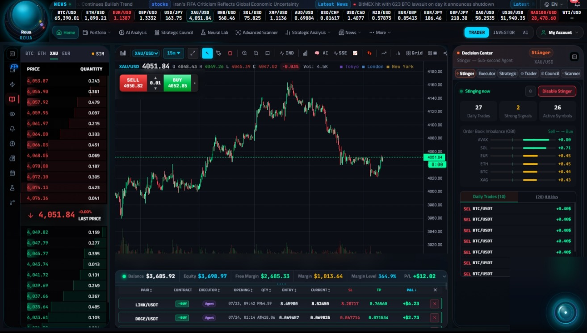
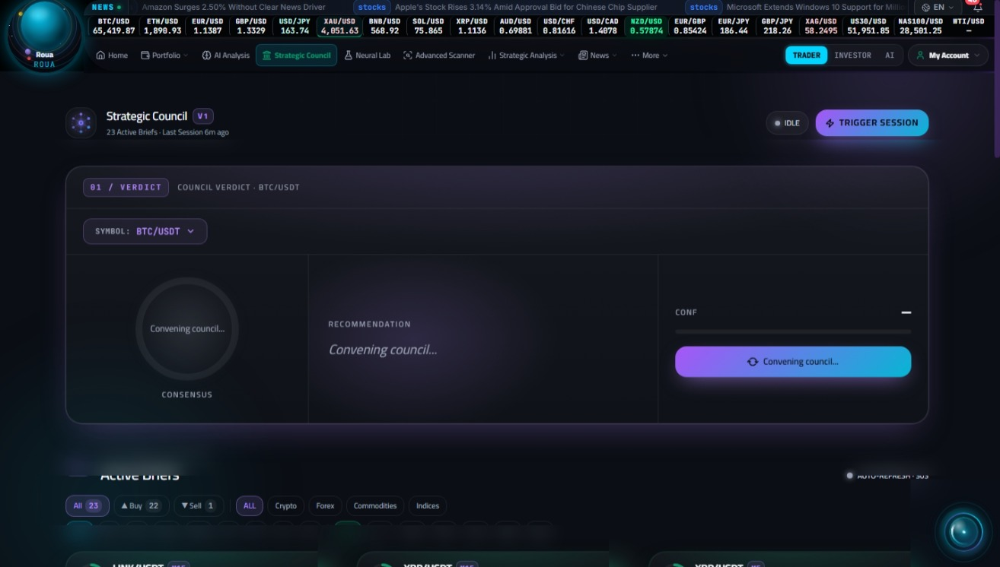
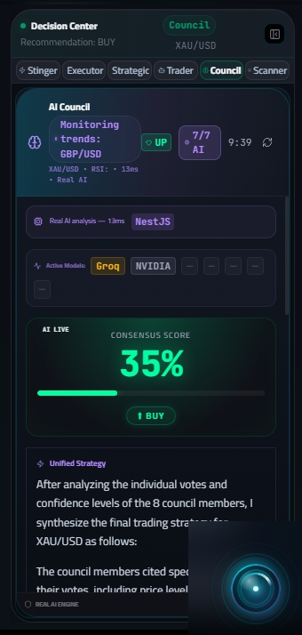
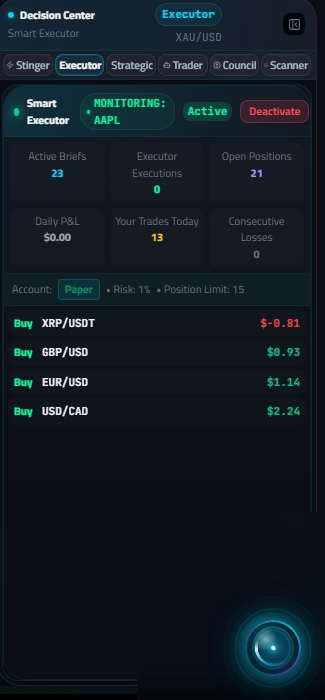
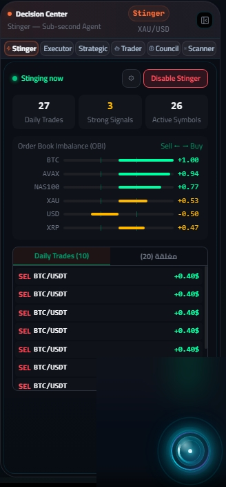
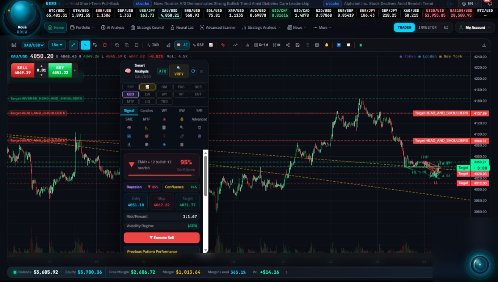
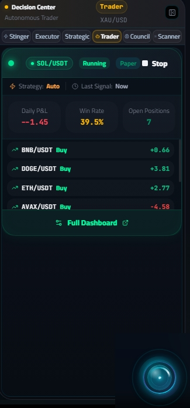

بنية تحتية مالية تجمع الاستخبارات والتحليل والتنفيذ في منصة واحدة. بلا وسيط، بخمس لغات، في الزمن الحقيقي.

رؤى ليست موقع أخبار، ولا منصة تداول، ولا وسيط. هي بنية تحتية للاستخبارات المالية — تجمع، تُحلّل، وتُنفّذ في مسار واحد متكامل.

ليست منصة واحدة، بل بنية تحتية تجمع العقل المالي وذراع التنفيذ في مسار واحد مغلق.



محرك استخبارات مالي يحوّل 729+ مصدراً عالمياً إلى معرفة قابلة للتنفيذ — أخبار، تحليلات، تقارير، فيديو، وإنفوجرافيك بـ 5 لغات حيّة.
منظومة ذكاء اصطناعي متكاملة لاتخاذ القرار والتنفيذ — مجلس ذكي بـ 10 أدوار، منفّذ بـ 15 فحص أمان، ووكلاء مستقلون.
رؤى الأخبار + رؤى التداول = بنية تحتية للاستخبارات المالية. تعملان باستقلالية تامة، وتتكاملان عند الحاجة عبر طبقة ذكاء موحدة.
لوحة شارت احترافية مصممة خصيصاً لرؤى — قدرات متقدمة في واجهة واحدة.

كل بياناتك مشفّرة، كل عملية موثقة، كل حساب معزول. أنت المتحكم الوحيد في أموالك.
كل بيانات الاعتماد مشفّرة at-rest و in-transit
حسابات المستخدمين معزولة 100% — لا وصول متبادل
كل عملية موثقة بالتوقيت وعنوان الشبكة
التداول على وسيطك مباشرة — نحن نوفّر الذكاء فقط

دورة كاملة: تحليل السوق ← تقييم الإشارات ← حساب المخاطر ← التنفيذ ← تتبّع الأداء. 8 استراتيجيات، 6 حالات تشغيل، تعلّم معزز.
رؤى ليست منتجاً نهائياً — هي طبقة أساس. اطلب عرضاً مخصصاً لشريحتك، واكتشف كيف تندمج المنصة في بنيتك خلال أيام لا أشهر.
اطلب عرضاً مخصصاً